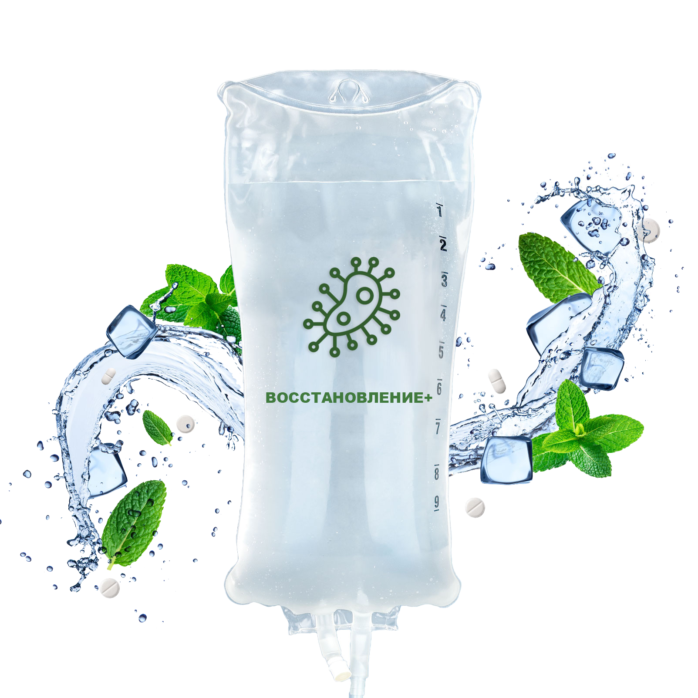
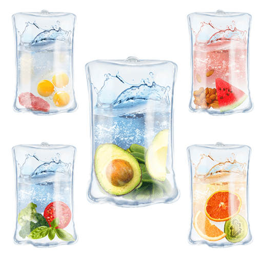

Капельница "DETOX+"

Капельницы направлены на влияние внешних токсинов и продуктов обмена веществ на клетки организма. Включает детокс, восстановление сердечно-сосудистой системы, нервной системы, печени и электролитно-водный балланс.
Эффекты:
улучшает работу митохондрий
активирует энергетические механизмы
улучшает работу нервных клеток.
Что входит в состав:
стерофундин
поливитаминный комплекс
Аскорбиновая кислота
Гепатопротектор
Капельница "Золушка+"

Капельница "Золушка" это специально составленный коктейль из полезных веществ, вводящихся внутривенно в организм пациента. Основой для коктейля служит антиоксидант глутатион (смесь цистеина, глутаминовой кислоты и глицина), который в норме самостоятельно вырабатывается клетками. Глутатион снимает воспаление и интоксикацию, защищает от повреждения клетки организма, борется с процессом окисления.
Эффекты:
улучшение психо-эмоционального состояния
Повышение физической активности, бодрости
Регуляция и улучшение сна
Быстрое восстановление после Ковида и других заболеваний
Улучшение состояние кожи лица и тела
Омоложение и осветлдение кожи
Повышение эластичности кожи, сглаживание морщин
Уменьшение пигментации и улучшение оттенка кожи
Улучшение состояние кожи при угревой болезни, постакне, шрамах.
Что входит в состав:
Витамин С
Альфа-липоевая (тиоктовая) кислота комплекс
Глутатион (трипептид)
Капельница "Лаеннек"

Капельница Лаеннек – это инновационная терапия, разработанная японскими научными деятелями. Действие вводимых веществ основано на запусках процессов регенерации, формировании защиты организма от преждевременного старения и достижении эффекта омоложения. Препарат способствует улучшению кровообращения, нормализации обмена веществ, выводит из организма шлаки и токсины, активизирует клеточное дыхание. Корея (глутатион 1200мг) - 6500р. , Италия - 7000р.
Эффекты:
Омоложение организма в среднем на десять лет. Организм лучше функционирует после капельниц.
Хорошее самочувствие.
Лифтинг-эффект.
Капельницы оказывают регенерирующее и восстанавливающее действие на клетки, омолаживают организм, дарят новое качество жизни.
Способствует снижению стресса
Ускоряет процесс восстановления после операций и травм
Замедляет процесс старения
Повышает общий иммунитет
Не имеет побочных эффектов
Что входит в состав:
гидролизат плаценты человека 112 мг
вода д/инъекций
натрия гидроксид или кислота хлористоводородная (для коррекции pH).
Капельница "Вoсстановление+"
Восстановление после вирусных инфекций (ковид, орви, кишечных отравлений).Реабилитация после болезни вирусом – необходимая мера поддержки организма, рекомендованная пациентам, перенесшим заболевание вне зависимости от степени тяжести. Организму, ослабленному вирусом, необходима витаминная поддержка. Быстро восстановиться и укрепить иммунную систему помогут внутривенные инфузии.Внутривенные вливания препарата ускоряют процессы восполнения витаминно-минерального баланса, и запускают функции органов.
Эффекты:
профилактика повторных заболеваний у болевших коронавирусом.
укрепление иммунитета.
устранение признаков депрессии, апатии и стресса.
восстановление легких и сердечно-сосудистой системы.
увеличение работоспособности.
снижение интоксикации.
улучшение аппетита и настроения.
Что входит в состав:
витамин D
витамины группы В
витамин С
глюкоза
Постановка капельниц
Постановка капельницы для внутривенного вливания — это медицинская процедура для введения в кровеносную систему пациента сосудосуживающих и антибактериальных составов, плазмозаменителя, кортикостероидов и многих других лекарственных средств.
Эффекты:
Лекарственные препараты поступают в неизмененном виде и дозе.
Действующее вещество поступает в организм постепенно в небольших количествах. Это позволяет достичь равномерной и постоянной концентрации препарата в крови.
Организм получает необходимый терапевтический эффект.Процедура проводится под наблюдение медицинского персонала, который при необходимости окажет необходимую первую помощь в случае внезапной аллергической реакции на препарат.
Отсутствуют побочные эффекты со стороны ЖКТ, характерные пероральным формам препаратов.
Капельница "Иммунитет+"
Эффективным способом восполнения нехватки полезных веществ является капельница Витаминная, которую вы можете сделать в нашей клинике. В условиях современной жизни, с ее активностью, экологией, часто недостатком сна, утомлением и неполноценным питанием, нашему организму становится сложно поддерживать себя самостоятельно. Отсюда бессонницы, стрессовые состояния, хроническая усталость и, в конце концов, различные заболевания.
Эффекты:
укрепление иммунитета и улучшение состояния здоровья в целом, на уровне клеток.
выведение токсинов.
ускорение обмена веществ;.
улучшение состояния кожи, волос и ногтей.
нормализация работы нервной и сердечно-сосудистой систем.
Что входит в состав:
янтарная кислота
рибоксин
витамины группы В
никотинамид